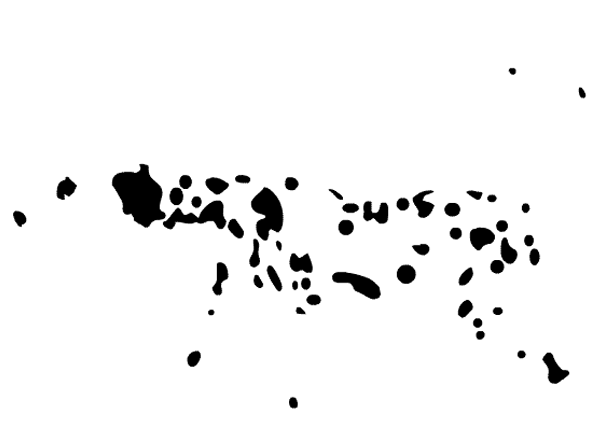

O que é Gestalt?
Se você estuda ou estudou psicologia, comunicação, design ou arquitetura, com certeza já se deparou e até aprofundou seus conhecimentos sobre Gestalt. A Gestalt é uma teoria fundada pelo psicólogo Max Wertheimer como uma pesquisa de orientação, compreensão e interpretação da nossa visão e da forma como enxergamos as coisas.
Como nosso cérebro utiliza parâmetros de leitura visual, ao enxergarmos um composto de elementos (sejam eles objetos, pessoas, paisagens, animais ou textos), a tendência é agrupar características que sejam semelhantes, de forma que sua interpretação seja a mais rápida possível. Logo, quanto mais complexo for o item, menos os detalhes vão ser processados a princípio. Um exemplo clássico é tentar escutar a nota de uma canção e comparar com a melodia inteira. Observe a imagem abaixo:
Se a primeira definição que lhe veio à cabeça foi uma máquina de escrever, e não um conjunto de teclas, engrenagens, peças de metal e papel, você está pensando como a Gestalt afirma.
Segundo a Gestalt, ao observarmos um objeto, primeiro o compreendemos como um todo, antes de notar seus elementos separadamente. Esse é o princípio básico da teoria, a Lei da Pregnância, que veremos mais à frente.
Há oito princípios da Gestalt que são essenciais na área da criação e que estão presentes no cotidiano. Você pode até mesmo notá-los em seu meio, ou aplicá-los sem ter ideia do que representam ou quais suas definições.
Proximidade
De acordo com a Gestalt, elementos muito próximos uns dos outros, se encaixando harmoniosamente, são processados em nosso cérebro como elementos conjuntos, ou unidades. É o princípio da proximidade. Além disso, se tais elementos são semelhantes reforçam ainda mais nosso cérebro para a leitura de um só objeto.
Os designers utilizam muito o princípio na criação de identidades visuais, principalmente em tipografias e elementos que, em tese, seriam comuns, mas com um recurso simples se tornam vários elementos. O resultado geralmente se torna uma unidade sólida e criativa.
IBM: listras presas em silhuetas formam o logotipo da empresa.
O símbolo em forma de U da Unilever. Um exemplo de elementos diferentes mas harmoniosos entre si pela proximidade.
O logo da NBC é formado por 6 formas coloridas em proximidade; nos espaços vazados forma-se a silhueta de um pavão.
Continuidade
A sétima lei da Gestalt, a lei da continuidade diz respeito à maneira como a percepção do fluxo e sequência dos elementos funciona em nosso cérebro. Trata-se da tendência dos objetos em seguir uma linha de fluidez visual gradativa, através de formas, linhas, cores, profundidade, planos, etc. Se você enxerga elementos em uma composição de modo ininterrupto, essa peça tem uma boa continuidade.
A prioridade da continuidade é estabelecer sempre a melhor forma possível aos olhos. Há inúmeros exemplos concretos de aplicação da lei da continuidade: a arquitetura de edifícios, escala de cores, estradas, diagramação de textos em revistas e livros.
Estádios de futebol são um ótimo exemplo de continuidade. O Mineirão repete as formas e linhas de maneira sequencial em todo o seu contorno.
O anúncio da FedEx mostra sequencialmente o movimento de despacho e recebimento de um produto por meio da empresa.
Segregação
A terceira lei da Gestalt dita que nosso cérebro tem a capacidade de diferenciar ou evidenciar objetos, ainda que sobrepostos. Isso se deve à variação de forma e estética que um elemento tem em comparação com outro, de modo que os estímulos visuais de cada unidade seja diferente. A segregação ocorre de várias maneiras: pontos, linhas, planos, volumes, sombras, brilhos, texturas, relevos, entre outras formas.
No campo do design é sempre bom estar atento aos contrastes de elementos para obter melhor leitura visual e entendimento do fluxo por parte do público. A segregação ainda trabalha na questão da hierarquia de importância dos objetos, de modo a valorizar parte da mensagem em relação à outra.
Anúncio do MC Donald’s, que realiza um jogo de interpretação ao substituir os ingredientes do sanduíche por livros de culinária

Anúncio da Land Rover, destacando hipopótamos e o carro Freelander ao fundo, ambos dentro da água.
Semelhança
Elementos semelhantes em cor ou forma tendem a ser agrupados pelo cérebro em uma só unidade. Isso faz com que objetos aproximados, apenas com uma característica semelhante, se unam aos olhos do leitor. É a quinta lei da Gestalt, a semelhança.
Em um emaranhado de objetos, se o criativo deseja que o receptor da mensagem identifique grupos de elementos mais facilmente, ele deve prezar pela igualdade de tons e formatos entre as unidades. A semelhança é também utilizada para criar formas a partir de outras formas.

Anúncio da Shootz Cafe & BillIards, no qual dois grupos de bolas de sinuca de cores semelhantes se agrupam para formar uma nova composição.
>Anúncio de Natal da Nespresso, que utiliza xícaras de café para formar uma árvore natalina.
Destino comum
Quando os elementos visuais se movem juntos na mesma direção, podemos vê-los como parte de um único grupo. Nosso olhar é atraído em direção figuras que estão se movendo juntos, e este princípio é particularmente importante para animações 2D e 3D.
Nesta, cada um dos pássaros individuais estão viajando na unidade na mesma direção, a nossa mente os percebes como fazendo parte de um único grupo, levando consigo um peixe capturado.
No logotipo do Campeonato Melbourne 2010 Cycling os pontos são afetados por um destino comum. As linhas criadas pelas cores movem-se na mesma direção criando um dinamismo que deixa o observador perceber um destino comum de movimento.
Última, porém uma das mais interessantes leis da Gestalt, o fechamento estabelece que o nosso cérebro tem a inclinação de fechar ou concluir formas que vemos inacabadas ou abertas. Isso se deve a padrões sensoriais e de ordem espacial que temos em nossa mente.
Ou seja, ao se guiar pela continuidade de uma forma, prevemos toda a sua estrutura. Um exercício que fazíamos de fechamento quando crianças é o famoso “ligue os pontos”, quando já imaginávamos o resultado do fechamento das linhas.

E aí, o que você vê?
Ao utilizar esta lei na criação de peças, é preciso ter cuidado para não gerar duplo sentido na interpretação por parte do público. Mesmo que as leis sejam aplicadas ao consumidor em geral, nem todos possuem o mesmo entendimento em relação a uma composição visual, por termos experiências diferentes quanto a percepção de objetos. Se você nunca teve contato visual com um elemento, certamente sua mente vai projetar a forma de outro item semelhante.
Este anúncio simples da Coca-Cola simula uma garrafa entre talheres. Mesmo que sua silhueta não esteja completa, já temos a forma em nossa memória por ser um objeto simples e famoso que se faz presente em nossa cultura.